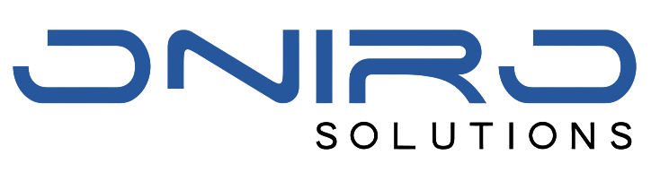

L'azienda ospitante
La Oniro Solutions è un azienda giovane e dinamica nata nel 2014 che svolge attività di progettazione Software e Hardware, realizzazione di quadri elettrici ed impianti nell’ambito dell’automazione industriale.
E' specializzata nella progettazione e realizzazione di impianti di automazione per linee di assemblaggio, produzione e collaudo, isole di lavorazione semi automatiche, automatiche e robotizzate, macchine utensili, impianti per lo smistamento ed imballaggio di prodotti finiti, sistemi di visione, magazzini automatici e logistica.
Grazie alla professionalità e all’esperienza dei propri collaboratori e alla continua ricerca nel campo dell’innovazione offre le migliori soluzioni da adottare in ogni fase del processo di automazione, garantendo affidabilità e assistenza continua.
